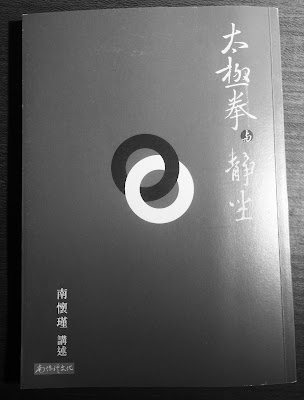

為什麼柔軟度、伸展與按摩我都從腳掌先做起呢？
「為什麼柔軟度、伸展與按摩我都從腳掌先做起呢？」 這是今年(2016 年)六月在高雄培訓 Garmin 心率教練時，其中一位教練提出的問題。這個問題沒有標準答案。因為若某位跑者都是從臀部往腳掌的方向做起，會不會有問題呢？我想身體也不會因為從臀部先伸展/按摩而受傷。
四年前我認為「按摩要從愈接近心臟的地方開始」，但為什麼現在都改成「按摩要從離心臟最遠的腳掌開始」進行教學呢？
這樣的做法並沒有對/錯，只是我是這樣思考的：身上每一滴血液都要流到最遠的腳掌才會再回到心臟，所以只要腳掌「先處理」，血流就會自動加速，全身的氣血自然變順暢，所以只做腳底按摩，全身也會覺得暖呼呼的！
人生中處理各種事物的原則也是，最重要的優先。從這樣的觀點來看，最遠端的腳掌和手掌應是所有可運動的部位中最重要的部位，所以現在我都會引導其他教練和學員先處理(伸展和按摩)腳掌再逐步向上，接著處理上肢，處理上肢時又先以手掌為先。
為什麼腳掌最重要，已逝的國學大師南懷瑾先生在講述稿《太極拳與靜坐》中有一篇精彩的論述，裡頭提到「所有生物之衰亡，都是由下而漸在上，逐步衰竭」，只要腳掌有力、氣血流通，自然會健康長壽。摘錄此段精彩的講稿如下，這段講稿影響我甚為深遠：
中國道家、印度瑜伽，或密宗的理論，都會談到人類關於「死」的問題。無論男女，每個人的死亡，都是從腳部開始的。道家深明此理，故訓練「息息歸踵」，所謂「真人之息以踵」，一般解釋「踵」為足心的「湧泉穴」。試觀嬰兒躺在床上自玩，經常是活動他的雙腳，而雙手反而很少活動。後來漸漸長大，仍然愛跑、愛跳，雙腳好動，中年後一變，卻愛坐喜靜，反而討厭年少好動的人。殊不知人到中年，活力已消減，下身等於半死狀態了，所以倦於活動。再看老人，坐時更喜將兩腳蹺起來放在桌上，才覺舒服，這表明下部生命力已大衰，兩腳易冷，老態呈現出來了。若老年人能腳底發燙，腳下有力，則是長壽的徵兆。又看胎兒的呼吸用臍，丹田在動，嬰兒呼吸雖用口鼻，而丹田仍自然在動。到了中年老年，丹田的動無力而靜止，改變位置，上縮至腹、至胸，再至喉至鼻，最後一口氣不續，嗚呼哀哉……就此報銷，可見生命力之衰亡，是由下而漸在上，逐步衰竭，我們做氣機功夫或練太極拳功夫，要「氣沉丹田」，使氣機暢運無滯為要，這是健康之道。(南懷瑾講述：《太極拳與靜坐》，台中：南懷瑾文化事業，2015 年出版，頁 42~43)

==
跑者不就正是一群愛跑、愛跳、雙腳好動的一群人嗎？我深信只要腳健康、身體就自然健康。但要保持雙腳健康，不能只是跑，還要像武士擦拭武器一樣，透過按摩、伸展和擴大關節的活動度來保養它。或比喻成汽車，要常駕駛才不會出問題，但每開一段時間就要進廠保養。運動與保養是維持健康的關鍵，而腳掌又是關鍵中的關鍵。